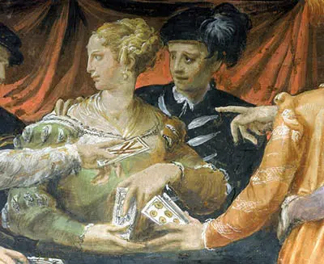

El Siglo de las Luces
Nace el juego de la adivinación
El Tarot de Marsella
La creación de los Arquetipos
Es una categoría de diseños de tarot que florecieron en Francia (especialmente en Marsella) y otras regiones europeas a partir del siglo XVII. Se considera el antecesor directo y más influyente de la mayoría de los mazos de tarot. se caracteriza por sus ilustraciones de estilo xilográfico (grabado en madera) con una paleta de colores distintiva (rojos, azules, amarillos y verdes). Sus Arcanos Mayores presentan figuras y escenas icónicas (El Loco, La Papisa, La Torre, etc.) que se han mantenido notablemente consistentes a lo largo de los siglos.
Jean-Baptiste Alliette
Conocido como Etteilla, fue el primero en transformar el tarot de un juego de cartas a una herramienta de adivinación con la publicación de su manual en 1781.
Antoine Court de Gébelin
Conectó los arcanos mayores del tarot con la Cábala y el alfabeto hebreo. Así, convirtió el tarot en un libro místico y una clave para la comprensión del universo, influyendo en los mazos modernos.
Estética y Estilo
Se caracteriza por un estilo artístico sencillo, con líneas gruesas y un uso de colores primarios que se asemeja a los grabados en madera.
Arcanos Mayores
Representan figuras arquetípicas y simbolismo esotérico que ha influenciado a muchos otros mazos a lo largo de la historia.

Arcanos Menores
A diferencia de los mazos modernos, solo muestran la disposición de los símbolos de cada palo.
Origen y Legado
Son la base de la mayoría de las barajas de tarot y su sistema de lectura.